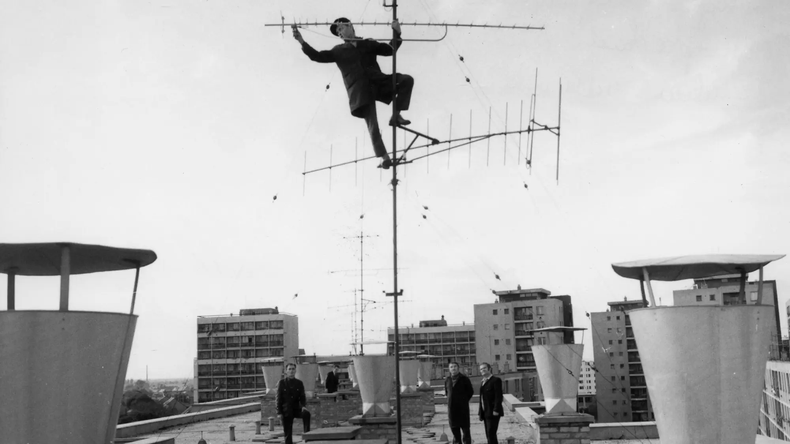

¿Dónde está la antena? La materialidad de la vida digital
La innovación tecnológica constante puede provocar un impacto ecológico mayor del que promete reducir.
Escrito por:

Para conseguir nuevas funcionalidades, las tecnologías se modernizan sin descanso; pero cada actualización implica una renovación de infraestructuras y equipos que genera una gran cantidad de residuos. Por lo tanto, antes de aceptarlas acríticamente como progreso, debemos tener en cuenta los costes energéticos y materiales de estas transiciones.
Nuestra vida hoy sería impensable sin la conectividad que nos ofrecen las redes e infraestructuras de telecomunicación. Tal es su ubicuidad y nuestra dependencia que damos por hecho su servicio permanente. No obstante, la mayoría desconocemos su funcionamiento e ignoramos la densa dimensión material que las sostiene. Cada generación móvil (3G, 4G, 5G, etc.) promete un incremento de la velocidad, la eficiencia y la conectividad; y en el caso del 6G, en fase de desarrollo, se anuncia además como verde y sostenible. Sin embargo, estas transiciones requieren enormes recursos energéticos y materiales y generan grandes volúmenes de residuos electrónicos al sustituir infraestructuras y dispositivos aún operativos. Detrás de la aparente nube inmaterial asociada a la comunicación digital hay antenas, centros de datos, cables y servidores con un impacto ambiental significativo. Por ello, la actualización tecnológica que se nos presenta como innovación eficiente encierra una contradicción: amplía la huella ecológica que afirma reducir, rompiendo así la promesa de sostenibilidad que justificó en primer lugar el cambio infraestructural.
De infraestructura a residuo
La conversión de una infraestructura funcional en residuo no es un proceso automático ni puramente técnico. No ocurre simplemente porque un equipo haya dejado de funcionar, sino que este proceso está supeditado a un conjunto de dinámicas —de tipo económico, institucional, material y técnico—, que tiran en direcciones opuestas y que ralentizan o aceleran la residualización.
Las de tipo económico intentan prolongar la vida útil de los equipos, y entre ellas encontramos dinámicas como las actualizaciones de software que no requieren ajustes en el hardware. También el diseño modular permite sustituir piezas sin necesidad de cambiar sistemas completos. Además, los operadores de telefonía móvil suelen compartir la llamada infraestructura pasiva —torres, mástiles o el cableado de las estaciones base— y mantenerla durante décadas. Los equipos de radio retirados de zonas urbanas pueden reutilizarse en áreas rurales o en otros países donde la exigencia tecnológica es menor. En definitiva, estas dinámicas muestran que la obsolescencia de la infraestructura de telecomunicaciones no es algo inevitable, pero compite con otros mecanismos más decisivos que la empujan hacia el descarte.
Entre las dinámicas institucionales que aceleran la generación de residuos encontramos la competencia entre operadores y fabricantes, que acelera la modernización constante de las redes ofreciendo nuevos servicios o funcionalidades para atraer clientes. Sin embargo, cada nueva generación introduce bandas de frecuencia y requisitos técnicos incompatibles con los equipos anteriores. A ello se suman los llamados swaps industriales: sustituciones masivas de equipamiento derivadas de estrategias comerciales, fusiones empresariales o incluso tensiones geopolíticas. El caso de Huawei en Europa es ilustrativo: su agresiva entrada en el mercado español, que consistió en la sustitución gratuita del equipamiento existente y su posterior exclusión, provocó (y sigue provocando) el reemplazo constante de dispositivos todavía operativos.
Los Estados también desempeñan un papel clave. A través de subvenciones y programas de implementación de redes de telecomunicaciones incentivan la pronta adopción de nuevas tecnologías. El resultado es una forma de obsolescencia impulsada desde el poder político, evidente sobre todo en las zonas rurales, pues las frecuencias de los nuevos equipos disponen de un menor alcance y requieren densificación, es decir, la instalación de nuevos dispositivos para garantizar la cobertura del mismo territorio.
A todo esto se añade la obsolescencia material de los dispositivos, cada vez más acelerada. La miniaturización reduce la cantidad de metales valiosos necesarios, pero esto los vuelve más frágiles y menos reparables. La presión por la reducción de costes favorece que se empleen componentes de menor calidad y se prioricen materiales como el plástico, menos reutilizable o reciclable que los metales. También las propias normas internas de las operadoras apuestan por la sustitución frente a la reparación, en un contexto de externalización de los servicios, precariedad laboral y urgencia operativa por resolver los daños y averías en el menor tiempo posible. Y, en muchos casos, los mismos fabricantes bloquean activamente la reutilización de sus aparatos, exigiendo certificados de destrucción, a fin de proteger sus mercados.
El residuo (electrónico) como mercancía
A raíz de esta disputa (desigual) entre fuerzas que compiten por la dis/continuidad de los dispositivos, surge el residuo electrónico: una condición o efecto negativo del régimen productivo desde una perspectiva económica; un inconveniente corregible mediante prácticas de circularidad. Sin embargo, el análisis detallado de las infraestructuras de telecomunicaciones y sus procesos de residualización revela algo distinto: la generación de residuos no es un accidente ni un error del sistema, sino una dinámica estructural del propio sistema de innovación tecnológica. Lejos de ser un efecto colateral de la producción o una externalidad inevitable del ciclo de innovación tecnológica, constituye un flujo productivo por derecho propio y un mercado en sí mismo. Es decir, la gestión del residuo electrónico no es simplemente la culminación de un proceso de producción y consumo, sino que forma parte del régimen de producción de valor: un combustible.
Esto se debe a que las infraestructuras de telecomunicaciones contienen abundantes metales valiosos —cobre, aluminio, oro, plata— que las convierten en una fuente atractiva para la industria del reciclaje. Tal es su valor, en comparación con otros dispositivos eléctricos y electrónicos, que en una visita a una planta de reciclaje calificaban estos residuos en particular como
la joya de la corona
de los RAEE (residuos de aparatos eléctricos y electrónicos). Lejos de ser una actividad subvencionada por razones ambientales, el reciclaje de este tipo de residuos es, en el fondo, un negocio rentable. De hecho, muchos lotes de equipos desmontados no se gestionan como pasivos ambientales, sino que los propios operadores suelen subastarlos como activos.
Al fin y al cabo, los recicladores no somos organizaciones benéficas, sino empresas que ganamos dinero con el medioambiente
, dijo uno de los informantes entrevistados;
cuanto más se renueva la tecnología, mejor para nosotros, claro
.
Estas dinámicas dan lugar a lo que podríamos denominar un mercado de atracción del residuo. No es solo que la innovación tecnológica produzca residuos debido a su implementación y desarrollo, sino que existe una demanda estructural de estos residuos por parte de actores que se benefician de su valorización. En este sentido, el residuo es una mercancía con valor propio.
Sin embargo, aquí aparece la segunda gran contradicción: aunque el reciclaje tiende a presentarse como una solución ecológica, en la práctica se rige casi exclusivamente por la rentabilidad económica. Para seguir siendo competitivas a nivel de precios, las plantas de reciclaje a menudo descartan los materiales que tienen un mayor impacto medioambiental pero que son más difíciles de recuperar, como las tierras raras y otras materias primas críticas que exigen procesos químicos más complejos, costosos e intensivos en energía. A pesar de su importancia económica, ecológica y geopolítica, estos materiales no suelen recuperarse. Es decir, solo se recupera aquello que resulta viable económicamente en el mercado global de materiales, pese a ser técnicamente reciclables y recuperables. El resto se convertirá en remanente: materiales potencialmente reciclables pero de escaso valor económico.
Pero existe otro elemento clave: el bajo coste del vertido, sobre todo en países como España, donde depositar residuos en vertederos autorizados sigue siendo relativamente barato en comparación con otros lugares. Por ello, la eliminación se convierte en una opción económica totalmente normalizada cuando el reciclaje ya no es rentable y el vertedero deja de ser un fallo del sistema circular para convertirse en una condición estructural. El depósito de residuos en vertederos funciona entonces como una válvula de escape que marca el umbral económico a partir del cual no merece la pena recuperar materiales. El remanente ya no es una anomalía, sino una parte estable e integral del sistema.
A este proceso lo denominamos segunda residualización. Del residuo electrónico inicial se extraen fracciones valiosas, pero queda un sobrante que acaba en vertederos, incineradoras o como impureza dentro de las fracciones valorizables. Además, el propio proceso de reciclaje genera nuevos residuos: lodos contaminados, escorias, gases y subproductos químicos que rara vez se contabilizan en los discursos de sostenibilidad. La paradoja es evidente: el reciclaje no elimina el residuo, sino que lo transforma y lo redistribuye; de manera que, lejos de cerrar el círculo, quedan expuestos los límites estructurales de la circularidad.
Repensar la sostenibilidad digital
Este análisis de los procesos de residualización infraestructural nos invita a cuestionar el imaginario de intangibilidad e inmaterialidad que asociamos con la comunicación móvil. En este sentido, nuestra investigación muestra que el residuo no es un accidente ni un efecto secundario del progreso y la innovación tecnológicos: es una de sus condiciones. La lógica de la renovación infraestructural, impulsada por un supuesto progreso e innovación permanentes, se sostiene sobre un ciclo de obsolescencia y descarte continuos que produce residuos como requisito para avanzar. Frente a esta realidad, no basta con prometer redes más eficientes, comunicación más verde o algoritmos más inteligentes.
Toda reflexión sobre lo que podría ser una transición tecnológica justa desde un punto de vista ecosocial exige una mirada distinta: requiere una sostenibilidad crítica y encarnada. Esto implica rematerializar nuestra evaluación de lo digital para hacer visibles las infraestructuras que sostienen la conectividad, politizar los residuos y reconectar los campos de la ingeniería, la economía, la ecología y las ciencias sociales. Solo así podremos debatir desde la autenticidad el tipo de conectividad que queremos y necesitamos, a quién irá dirigida y cuál será su coste material, social y ambiental. La pregunta no debería ser si el 6G será más rápido o eficiente; habría que plantearse si es posible seguir llamando verde a una transición que descansa, silenciosamente, sobre montañas cada vez más altas de basura electrónica.
Blanca Callén
Profesora e investigadora del departamento de Psicología Social de la Universidad Autónoma de Barcelona.
Cristina Cano
Profesora asociada del Departamento de Informática, Multimedia y Telecomunicaciones de la Universitat Oberta de Catalunya y miembro del grupo de investigación Wireless Networks.
Ion Fernández de las Heras
Antropólogo social y arquitecto urbanista.